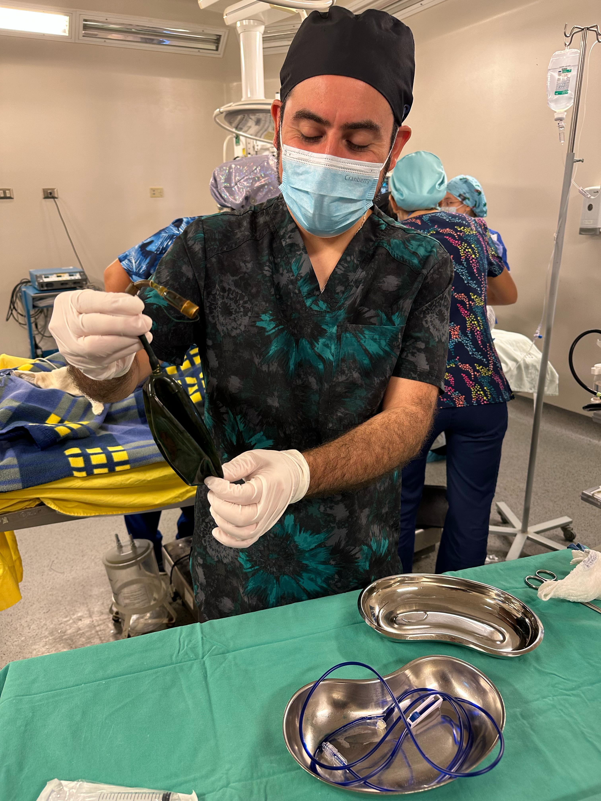
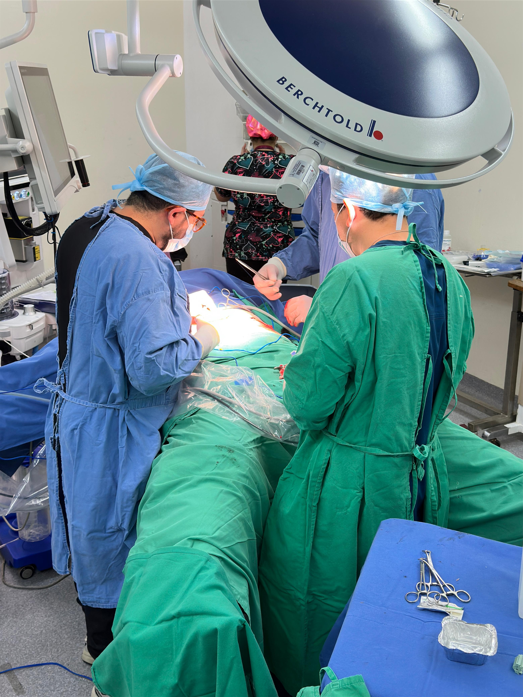
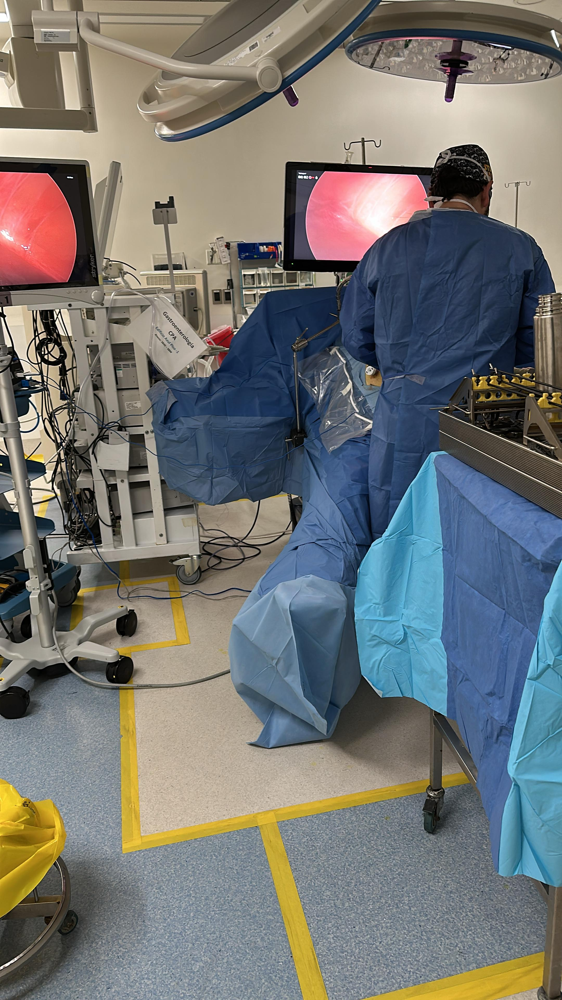

Conoce nuestras cirugías y procedimientos




En Bariatric, creemos que cada paciente es único y necesita un enfoque personalizado.
Por eso, trabajamos con un equipo de profesionales altamente capacitados que ofrecen
servicios especializados en el tratamiento de la obesidad.
Nutricionista, experta en asesorar a nuestros pacientes sobre las cirugías y el proceso postoperatorio.
Agendar AhoraEnfermero y asesor de Bariatric, orientando sobre cirugías y procedimientos adecuados para cada paciente.
Agendar Ahora